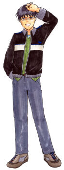

バリケンブルー しょうちゃん

名前 / 年齢
小梅青太郎（こうめせいたろう） / 21歳
誕生日 / 血液型
7月4日 蟹座 / ＡＢ
職業
大学生
家族構成
父・富士郎、母・静夏
タヌキの幼馴染みで、「しーちゃん」「うめ」と呼び合う仲。
小学校の時関西方面へ引っ越したが、高校で偶然タヌキと再会した。
鳥マニアで読書の次にバードウオッチングが趣味。
ペットの文鳥はピーちゃん。鳥についてアツくアツく語る。
環境保護にも並々ならぬ関心があり、鶴田昇を尊敬している。